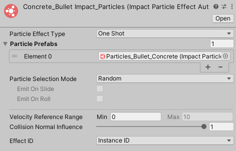
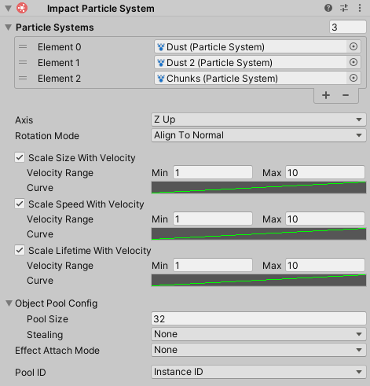
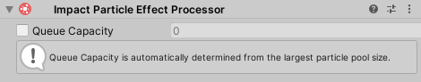

Particle Effects
Particle Effects are used to display particle effects for interactions. You can create a new Particle Effect by going to .
Particle Effects have the following properties:
- Particle Effect Type – The kind of particle effect.
- One Shot – A one-shot effect for single collisions.
- Looped – Looped particles for sliding or rolling effects. Looped particles only support a single Particle Prefab.
- Particle Prefabs – A list of particle prefabs that a particle effect will be chosen from. If Particle Effect Type is set to Looped, you can only use a single Particle Prefab.
- Particle Selection Mode – How particle effects will be chosen from the list.
- Random – Select a particle effect from the list.
- Velocity – Base the particle effect on the collision velocity. Particle effects should be sorted in order from lowest velocity to highest velocity.
- Emit On Slide – Should particles be displayed when sliding?
- Emit On Roll – Should particles be displayed when rolling?
- Velocity Reference Range – Collision velocities will be compared against this range for various calculations. If the collision velocity is less than the minimum value of the range, no effect will be played. When Particle Selection Mode is set to Velocity, this range will be used to determine which prefab to use.
- Collision Normal Influence – How much the collision normal will effect the calculated intensity of the collision.
- Effect ID – Controls how the ID for the effect is determined.
- Instance ID – Use the instance ID obtained from GetInstanceID()
- Object Name – Use the asset's name to determine the ID. This is mainly useful if GetInstanceID() is too inconsistent for your needs. This requires that your asset names be unique to avoid duplicate IDs.
Particle Prefab
Particle Effects require a prefab with an Impact Particle System component attached to it. You can add this script to your prefab by going to .
Impact Particle Systems have the following properties:
- Particle Systems – The Particle Systems that are being controlled.
- Rotation Mode – How the particles should be rotated on the surface.
- Align To Normal – Align the particles to the surface normal.
- Align To Velocity – Align the particles with the velocity direction.
- Align To Normal And Velocity – Align the particles to the surface normal, and also rotate them to match the velocity direction.
- No Rotation – Don't do any rotation.
- Axis – Which axis of the particles should be aligned to the surface.
- Scale Size With Velocity – Allows scaling the particle start size based on the collision velocity.
- Velocity Range – The velocity range to reference when comparing with the collision velocity.
- Curve – Defines the scalar value that will be applied to the particles based on the collision velocity and Velocity Range.
- Scale Speed With Velocity – Allows scaling the particle start speed based on the collision velocity.
- Scale Lifetime With Velocity – Allows scaling the particle start lifetime based on the collision velocity.
- Pool Size – The size of the object pool created for this particle system.
- Stealing – How the object pool should handle cases when you want to retreive a particle system, but they are all in use.
- None – Do nothing and no effect will be played.
- Lower Priority – Attempt to take an active particle system with a lower priority than this one. Priority is set on Impact Objects.
- Oldest – Take the particle system that has been active the longest.
- Effect Attach Mode – Defines what object involved in the collision, if any, the effect should attach to.
This can be useful for long collision effects that you want to follow an object.
See Managing Attached Effects for more info on how to properly manage attached effects.
- None – Don't attach to an object.
- This Object – Attach to the object that triggered the effect, if it is present.
- Other Object – Attach to the object that was collided with, if it is present.
- Pool ID – Controls how the ID for this prefab's object pool is determined.
- Instance ID – Use the instance ID obtained from GetInstanceID()
- Object Name – Use the object's name to determine the ID. This is mainly useful if GetInstanceID() is too inconsistent for your needs. This requires that your prefab names be unique to avoid duplicate IDs.
Particle Effect Processor 
The Particle Effect Processor is responsible for handling all Particle Effects at runtime.
You can create this component by going to . Make sure that you add this processor to the Impact Effect Processors list on your Impact CFX Manager
The Queue Capacity property defines how many particle effects the processor can handle in a single frame. This is automatically set based on the largest particle template pool size, but you can override it if you wish.